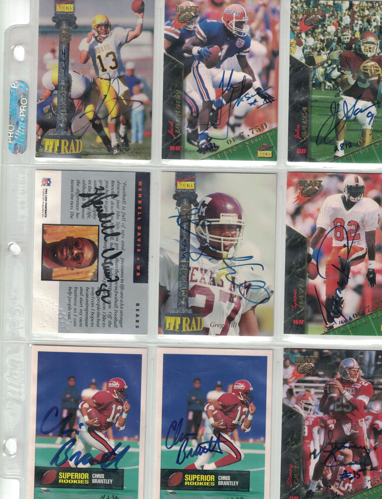

Miscellaneous
Here is the list of autographed cards you will get: Kevin Mawae | Football | 1 | Pro Football Hall of Fame center Willie McGinest | Football | 1 | Three-time Super Bowl champion with the Patriots Henry Thomas | Football | 2 | Longtime NFL defensive tackle Ruben Brown | Football | 1 | Nine-time NFL Pro Bowl offensive lineman Wesley Person | Basketball | 1 | NBA three-point shooting specialist Brent Moss | Football | 1 | Rose Bowl MVP for Wisconsin Frank Sanders | Football | 1 | Arizona Cardinals wide receiver Greg Hill | Football | 1 | 1,000-yard NFL running back Jim Flanigan | Football | 1 | NFL defensive tackle for the Bears Rob Fredrickson | Football | 1 | First-round NFL linebacker Wendell Davis | Football | 1 | Chicago Bears receiver known for comeback after severe injuries Oscar McBride | Football | 1 | NFL tight end and UCLA standout A. J. Peirzynski | Baseball | 1 | Chicago White Sox Aaron Boone | Baseball | 1 | New York Yankees Adrian Autrey | Basketball | 2 | Texas Longhorns Alen Aldridge | Football | 2 | Denver Broncos Anthony Brown | Football | 1 | Dallas Cowboys Anthony Goldwire | Basketball | 1 | Phoenix Suns Askia Jones | Basketball | 1 | Purdue Boilermakers Bill King | Baseball | 1 | Army Black Knights Bob Howry | Baseball | 1 | Chicago Cubs Brandon Bennett | Football | 2 | Cincinnati Bengals Brian Grant | Basketball | 2 | Portland Trail Blazers Brian Hunter | Baseball | 1 | Atlanta Braves Brian Pruitt | Football | 1 | Minnesota Vikings Brian Stephenson | Baseball | 2 | Chicago Cubs Bronzell Miller | Football | 1 | Notre Dame Fighting Irish Byron Gainey | Baseball | 1 | Florida Gators Carl Dale | Baseball | 2 | Unknown Chris Brantley | Football | 3 | Tampa Bay Buccaneers Chris Carpenter | Baseball | 2 | St. Louis Cardinals Chris Maumalanga | Football | 1 | New York Giants Chris McBride | Baseball | 2 | Unknown Cletus Davidson | Baseball | 3 | Unknown Corey Beck | Basketball | 1 | Arkansas Razorbacks Corey Pointer | Baseball | 1 | Unknown Curtis Goodwin | Baseball | 1 | Baltimore Orioles Damon Bailey | Basketball | 1 | Indiana Hoosiers Dave Wohlabaugh | Football | 1 | New England Patriots David Dunn | Football | 1 | Jacksonville Jaguars Deon Thomas | Basketball | 1 | Illinois Fighting Illini Derrick Alston | Basketball | 1 | Philadelphia 76ers Dickey Simpkins | Basketball | 2 | Chicago Bulls Doug Million | Baseball | 1 | Minnesota Twins Doug NussMeier | Football | 1 | Denver Broncos Doug Webb | Baseball | 1 | Unknown Dustin Hermanson | Baseball | 1 | St. Louis Cardinals Eddie Goines | Football | 1 | Indianapolis Colts Edgardo Alfonzo | Baseball | 1 | New York Mets Eric Snow | Basketball | 1 | Philadelphia 76ers Eric Williams | Basketball | 1 | Unknown Ervin Collier | Football | 1 | Baltimore Ravens Frank Harvey | Football | 1 | Phoenix Cardinals Gar Finnvold | Baseball | 2 | Stanford Cardinal Gaylon Nickerson | Basketball | 2 | Milwaukee Bucks Geoff Sarjeant | Hockey | 1 | Vancouver Canucks Gorden Amerson | Baseball | 1 | Unknown Greg Minor | Basketball | 1 | Boston Celtics Greg Ostertag | Basketball | 1 | Utah Jazz Greg Whiteman | Baseball | 1 | Pittsburgh Pirates Heath Murray | Baseball | 2 | Unknown Jack Johnson | Football | 1 | Unknown Jacob Cruz | Baseball | 1 | San Francisco Giants Jamal Willis | Football | 1 | San Francisco 49ers Jaret Wright | Baseball | 2 | Cleveland Indians Jason Jacome | Baseball | 2 | New York Mets Jason Sikes | Baseball | 1 | New York Mets Jason Varitek | Baseball | 2 | Boston Red Sox Jayson Peterson | Baseball | 1 | Dallas Cowboys Jeff Granger | Baseball | 1 | Kansas City Royals Jeremy Nunley | Football | 1 | New York Jets Jeremy Powell | Baseball | 1 | Montreal Expos Jerry Reynolds | Football | 2 | Unknown Jerry Whittaker | Baseball | 2 | San Diego Padres Jim McIlvaine | Basketball | 2 | Seattle SuperSonics Jimmy King | Basketball | 3 | Michigan Wolverines Joe Dziedzic | Hockey | 1 | Buffalo Sabres Joe Dziedzic | Hockey | 1 | Buffalo Sabres John Ambrose | Baseball | 1 | Unknown John Burke | Football | 1 | Unknown John Covington | Football | 2 | Buffalo Bills John Crowther | Baseball | 2 | Unknown John Sacca | Football | 1 | Phoenix Cardinals John Schroeder | Baseball | 1 | California Angels John Slamka | Baseball | 1 | Detroit Tigers Johnny Thomas | Football | 1 | Chicago Bears Joseph Patton | Football | 1 | Philadelphia Eagles Julias Michalik | Basketball | 1 | Unknown Justen Hermanson | Baseball | 1 | Detroit Tigers Kelly Faitchild | Hockey | 1 | Unknown Kenny Harris | Basketball | 1 | Unknown Kent Fearns | Hockey | 1 | Unknown Kevin Witt | Baseball | 1 | Toronto Blue Jays Kez McCorvey | Football | 1 | Detroit Lions Krzysztof Oliwa | Hockey | 1 | New Jersey Devils Larry Barnes | Baseball | 1 | Unknown Larry Sykes | Basketball | 1 | Unknown Loren Meyer | Basketball | 1 | Dallas Mavericks Luis Lopez | Baseball | 1 | Toronto Blue Jays Mario Bennett | Basketball | 1 | Unknown Mark Birchmeier | Football | 2 | Minnesota Vikings Mark Desantis | Hockey | 1 | Unknown Mark Farris | Baseball | 1 | Texas A&M Aggies Matt O'Dwyer | Football | 1 | New York Giants Matt Smith | Baseball | 3 | Anaheim Angels Matt Treanor | Baseball | 2 | Florida Marlins Matt Wagner | Baseball | 2 | Seattle Mariners Maxim Kuznetsov | Hockey | 1 | Detroit Red Wings McKay Christensen | Baseball | 1 | Chicago White Sox Melvin Simon | Basketball | 1 | Sacramento Kings Michael McDonald | Basketball | 1 | Unknown Midre Cummings | Baseball | 1 | Pittsburgh Pirates Mike Darr | Baseball | 1 | San Diego Padres Mike Thurman | Baseball | 2 | Montreal Expos Paul Failla | Baseball | 1 | California Angels Paul O'Liney | Basketball | 1 | Unknown Paul Ottavinia | Baseball | 1 | Minnesota Twins Phil Geisler | Baseball | 1 | Chicago White Sox Ramon Castro | Baseball | 1 | New York Mets Randy Rutherford | Basketball | 1 | Unknown Ricky Brady | Football | 1 | Cincinnati Bengals Rob Welch | Baseball | 1 | Chicago Cubs Rodney Rogers | Basketball | 1 | Phoenix Suns Roger Goedde | Baseball | 2 | Florida Marlins Roger Graham | Football | 2 | Seattle Seahawks Roger Salkeld | Baseball | 1 | Seattle Mariners Roger Worley | Baseball | 3 | Chicago White Sox Ryan Yarborough | Football | 1 | Unknown Scott Elarton | Baseball | 3 | Houston Astros Scott Highmark | Basketball | 1 | Unknown Sean Johnston | Baseball | 1 | Unknown Sebastian Velee | Hockey | 1 | Washington Capitals Setvin Smith | Basketball | 3 | Arkansas Razorbacks Stefan Ustorf | Hockey | 1 | Washington Capitals Steve Ingram | Football | 1 | Tampa Bay Buccaneers Steve Shoemaker | Baseball | 1 | Chicago White Sox Steve Woodard | Baseball | 1 | Milwaukee Brewers Stoney Case | Football | 1 | Arizona Cardinals Terrel Fletcher | Football | 1 | San Diego Chargers Terrnce Long | Baseball | 1 | Oakland Athletics Terry Moore | Baseball | 2 | St. Louis Cardinals Tim Taylor | Hockey | 1 | Detroit Red Wings Tom Klelnschmidt | Basketball | 1 | Texas Longhorns Tommy Davis | Baseball | 1 | Unknown Toney Maronet | Basketball | 1 | Florida State Seminoles Tony Terry | Baseball | 3 | Unknown Travis Miller | Baseball | 1 | Unknown Tyler Green | Baseball | 1 | Philadelphia Phillies Tyrone Davis | Football | 1 | Green Bay Packers Vadim Sharifanov | Hockey | 1 | Washington Capitals Vadim Yepanchintsev | Hockey | 1 | New York Rangers Valentin Morozov | Hockey | 1 | Moscow Dynamo Valeri Karpov | Hockey | 1 | Anaheim Mighty Ducks Vic Darensbourg | Baseball | 1 | Florida Marlins Winfred Tubbs | Football | 3 | New Orleans Saints Yannick Dube | Hockey | 1 | Quebec Nordiques Yates Hall | Baseball | 1 | Unknown Zane Beehn | Football | 1 | Unknown
Product No. HEA-0327
$400
Shipping: $14.95
Description
Signature Rookies from mid-1910s. All 204 cards are signed.
Full Description
Signature Rookies Tetrad Autographs (1994–1995) These 204 original autographs are from the Signature Rookies Tetrad set — signed by top college stars right before they made the jump to the pros. They aren't your typical licensed rookie cards; they were produced independently back in 1994–1995, capturing players' autographs during their final year of college ball, right at that exciting "about to go pro" moment. The set covers all four major sports — football, basketball, baseball, and hockey — so it's a fun one for collectors who like variety. If you're into grabbing a piece of a player's story from the very beginning, before the big leagues and the big licensing deals, this one's for you. Message from seller: Greetings, This listing represents one of the most interesting inventory items I ever came across. Up for sale is this Huge Lot of 204 All Genuine Autographed Sports Cards : Baseball, Football, Basketball, Hockey. These are from the 1994 "Signature Rookies" run. I am not much of a sports fan, but I have compiled this list to the best of my ability. Each card is authentically autographed by the player on the card. A few of the cards have multiples, but each is individually signed.
Authentication
Signature Rookies
Condition
Excellent condition